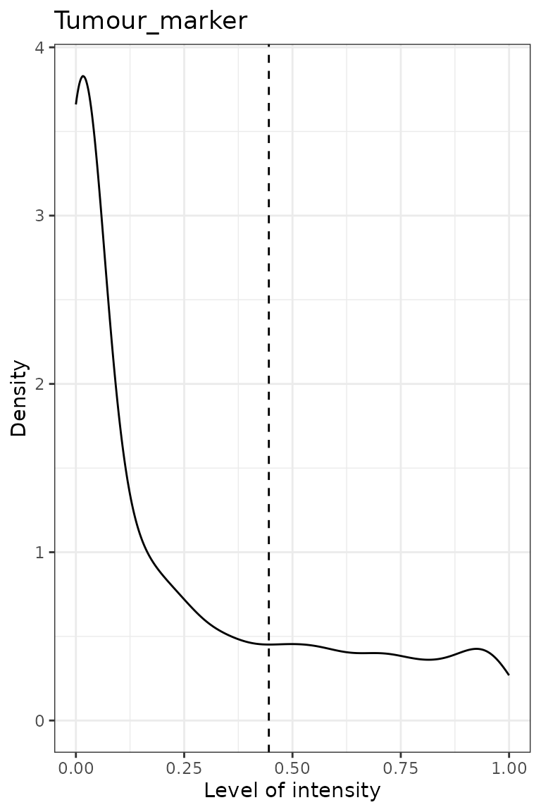

vignettes/data_reading-formatting.Rmd
data_reading-formatting.RmdFirst we load the SPIAT library.
format_image_to_spe() is the main function to read in
data to SPIAT. format_image_to_spe() creates a
SpatialExperiment object which is used in all subsequent
functions. The key data points of interest for SPIAT are cell
coordinates, marker intensities and cell phenotypes for each cell.
format_image_to_spe() has specific options to read in
data generated from inForm, HALO, CODEX and cellprofiler. However, we
advise pre-formatting the data before input to SPIAT so that accepted by
the ‘general’ option (shown below). This is due to often inconsistencies
in the column names or data formats across different versions or as a
result of different user options when using the other platforms.
Format “general” allows you to input a matrix of intensities
(intensity_matrix), and a vector of
phenotypes, which should be in the same order in which they
appear in the intensity_matrix. They must be of the form of
marker combinations (e.g. “CD3,CD8”), as opposed to cell names
(e.g. “cytotoxic T cells”), as SPIAT does matching with the marker
names. phenotypes is an optional parameter and can be set
as NULL if no phenotypes are available. The user also needs
to provide separate vectors with the X and Y coordinates of the cells
(coord_x and coord_y). The cells must be in
the same order as in the intensity_matrix. If you have
Xmin, Xmax,Ymin and
Ymax columns in the raw data, we advise calculating the
average to obtain a single X and Y coordinate, which you can then use as
input to coord_x and coord_y.
Specifically, if intensity_matrix is available, please
make sure the colnames of the intensity matrix are the cell
IDs as some SPIAT functions (like
identify_bordering_cells()) require the constructed image
object to have cell IDs as rownames of the colData and
colnames of the intensity matrix. If
intensity_matrix is NULL, the function will
automatically assign IDs to the cells.
Here we use some dummy data to illustrate how to read “general” format.
# Construct a dummy marker intensity matrix
## rows are markers, columns are cells
intensity_matrix <- matrix(c(14.557, 0.169, 1.655, 0.054,
17.588, 0.229, 1.188, 2.074,
21.262, 4.206, 5.924, 0.021), nrow = 4, ncol = 3)
# define marker names as rownames
rownames(intensity_matrix) <- c("DAPI", "CD3", "CD4", "AMACR")
# define cell IDs as colnames
colnames(intensity_matrix) <- c("Cell_1", "Cell_2", "Cell_3")
# Construct a dummy metadata (phenotypes, x/y coordinates)
# the order of the elements in these vectors correspond to the cell order
# in `intensity matrix`
phenotypes <- c("OTHER", "AMACR", "CD3,CD4")
coord_x <- c(82, 171, 184)
coord_y <- c(30, 22, 38)
general_format_image <- format_image_to_spe(format = "general",
intensity_matrix = intensity_matrix,
phenotypes = phenotypes,
coord_x = coord_x,coord_y = coord_y)The formatted image now contains phenotypes, locations, and marker
intensity information of 3 cells. Note that if users want to define cell
IDs, the cell IDs should be defined as the colnames of the intensity
matrix. The order of the rows of the metadata should correspond to the
order of the colnames of the intensity matrix. The function will
automatically assign rownames to the spatialCoords() and
colData() of the image (now as a
spatialExperiment object).
Use the following code to inspect the formatted SpatialExperiment object.
# phenotypes and cell properties (if available)
colData(general_format_image)## DataFrame with 3 rows and 3 columns
## Cell.ID Phenotype sample_id
## <character> <character> <character>
## Cell_1 Cell_1 OTHER sample01
## Cell_2 Cell_2 AMACR sample01
## Cell_3 Cell_3 CD3,CD4 sample01
# cell coordinates
spatialCoords(general_format_image)## Cell.X.Position Cell.Y.Position
## [1,] 82 30
## [2,] 171 22
## [3,] 184 38
# marker intensities
assay(general_format_image)## Cell_1 Cell_2 Cell_3
## DAPI 14.557 17.588 21.262
## CD3 0.169 0.229 4.206
## CD4 1.655 1.188 5.924
## AMACR 0.054 2.074 0.021If you prefer to use data directly generated from inForm, HALO, CODEX
or cellprofiler, these can be specified by format param in
format_image_to_spe(). We will show examples for the inForm
and HALO formats.
For reading in input generated with CODEX or cellprofiler see the
documentations (?format_image_to_spe).
To read in data from inForm, you need the table file generated by
inForm containing the cell IDs, cell locations, phenotypes (if
available) and marker intensities. You also need to extract a vector of
marker names and marker locations (“Nucleus”, “Cytoplasm”, or
“Membrane”). format_image_to_spe() uses the “Cell X
Position” and “Cell Y Position” columns and the “Phenotype” column in
the inForm raw data. The phenotype of a cell can be a single marker, for
example, “CD3”, or a combination of markers, such as “CD3,CD4”. As a
convention, SPIAT assumes that cells marked as “OTHER” in “inForm” refer
to cells positive for DAPI but no other marker. The phenotypes must be
based on the markers (e.g. CD3,CD4), rather than names of cells
(e.g. cytotoxic T cells). The names of the cells (e.g. cytotoxic T
cells) can be added later using the define_celltypes()
function. The following cell properties columns are also required to be
present in the inForm input file: Entire Cell Area (pixels), Nucleus
Area (pixels), Nucleus Compactness, Nucleus Axis Ratio, and Entire Cell
Axis Ratio. If not present in the raw data, these can be columns with
NAs.
To read in inForm data, you need to specify the following parameters:
format: “inForm”path: path to the raw inForm image data filemarkers: names of markers used in the OPAL staining.
These must be in the same order as the marker columns in the input file,
and must match the marker names used in the input file. One of the
markers must be “DAPI”.locations: locations of the markers in cells, either
“Nucleus”, “Cytoplasm” or “Membrane.” These must be in the same order as
markers. The locations are used to auto-detect the
intensity (and dye) columns.A small example of inForm input is included in SPIAT containing dummy
marker intensity values and all the other required columns (see below).
This example file is just for demonstrating importing a raw data file,
later in the Inspecting the SpaitalExperiment
object section we will load a larger preformatted dataset. Users are
welcome to use this formatting option (format = 'inForm')
if it is closer to the format of their files.
raw_inform_data <- system.file("extdata", "tiny_inform.txt.gz", package = "SPIAT")
markers <- c("DAPI", "CD3", "PD-L1", "CD4", "CD8", "AMACR")
locations <- c("Nucleus","Cytoplasm", "Membrane","Cytoplasm","Cytoplasm",
"Cytoplasm") # The order is the same as `markers`.
formatted_image <- format_image_to_spe(format="inForm", path=raw_inform_data,
markers=markers, locations=locations)Alternatively, rather than specifying the locations, you
can also specify the specific intensity columns with the parameter
intensity_columns_interest as shown below.
raw_inform_data <- system.file("extdata", "tiny_inform.txt.gz", package = "SPIAT")
markers <- c("DAPI", "CD3", "PD-L1", "CD4", "CD8", "AMACR")
intensity_columns_interest <- c(
"Nucleus DAPI (DAPI) Mean (Normalized Counts, Total Weighting)",
"Cytoplasm CD3 (Opal 520) Mean (Normalized Counts, Total Weighting)",
"Membrane PD-L1 (Opal 540) Mean (Normalized Counts, Total Weighting)",
"Cytoplasm CD4 (Opal 620) Mean (Normalized Counts, Total Weighting)",
"Cytoplasm CD8 (Opal 650) Mean (Normalized Counts, Total Weighting)",
"Cytoplasm AMACR (Opal 690) Mean (Normalized Counts, Total Weighting)"
) # The order is the same as `markers`.
formatted_image <- format_inform_to_spe(path=raw_inform_data, markers=markers,
intensity_columns_interest=intensity_columns_interest)
class(formatted_image) # The formatted image is a SpatialExperiment object## [1] "SpatialExperiment"
## attr(,"package")
## [1] "SpatialExperiment"
dim(colData(formatted_image))## [1] 9 7
dim(assay(formatted_image))## [1] 6 9To read in data from HALO, you need the table file generated by HALO. The biggest difference between inForm and HALO formats is the coding of the cell phenotypes. While inForm encodes phenotypes as the combination of positive markers (e.g. “CD3,CD4”), HALO uses a binary system where 1 means the cell is positive for the marker and 0 otherwise.
format_image_to_spe() for “HALO” format collapses HALO
encoded phenotypes into an inForm-like format to create the
Phenotype column. For example, if HALO has assigned a cell
a marker status of 1 for CD3 and 1 for CD4, SPIAT will give it the
Phenotype “CD3,CD4”. Cells that have a marker status of 1 for DAPI but
no other marker are given the phenotype “OTHER”.
format_image_to_spe() takes the average of the HALO X
min and X max columns for each cell to create the
Cell.X.Position column. It takes the average of the Y min
and Y max to create the Cell.Y.Position column.
To read in HALO data, you need to specify the following parameters:
format: “HALO”path: path to the raw HALO image data filemarkers: names of markers used in the OPAL staining.
These must be in the same order as the marker columns in the input file,
and must match the marker names used in the input file. One of the
markers must be DAPI.locations: locations of the markers in cells, either
“Nucleus”, “Cytoplasm” or “Membrane.” These must be in the order of the
markers. The locations are used to auto-detect the
intensity (and dye) columns.intensity_columns_interest use if
locations is not specified. Vector with the names of the
columns with the level of each marker. Column names must match the order
of the markers parameter.dye_columns_interest Use if locations is not specified.
Vector of names of the columns with the marker status (i.e. those
indicating 1 or 0 for whether the cell is positive or negative for the
marker). Column names must match the order of the markers
parameter.Users can specify the locations to auto-detect the
columns as shown above for inForm. Alternatively, if users want to
specify the columns instead, you can do so with
intensity_columns_interest, as shown in the example below.
Note that then you also must specify dye_columns_interest.
The following cell properties columns are also required to be present in
the HALO input file: Cell Area, Nucleus Area, Cytoplasm Area. If these
are not present in the user’s data, we recommend adding these columns
with NA values.
raw_halo_data <- system.file("extdata", "tiny_halo.csv.gz", package = "SPIAT")
markers <- c("DAPI", "CD3", "PD-L1", "CD4", "CD8", "AMACR")
intensity_columns_interest <- c("Dye 1 Nucleus Intensity",
"Dye 2 Cytoplasm Intensity",
"Dye 3 Membrane Intensity",
"Dye 4 Cytoplasm Intensity",
"Dye 5 Cytoplasm Intensity",
"Dye 6 Cytoplasm Intensity")
dye_columns_interest <- c("Dye 1 Positive Nucleus",
"Dye 2 Positive Cytoplasm",
"Dye 3 Positive Membrane",
"Dye 4 Positive Cytoplasm",
"Dye 5 Positive Cytoplasm",
"Dye 6 Positive Cytoplasm")
formatted_image <- format_halo_to_spe(
path=raw_halo_data, markers=markers,
intensity_columns_interest=intensity_columns_interest,
dye_columns_interest=dye_columns_interest)
class(formatted_image) # The formatted image is a SpatialExperiment object## [1] "SpatialExperiment"
## attr(,"package")
## [1] "SpatialExperiment"
dim(colData(formatted_image))## [1] 10 5
dim(assay(formatted_image))## [1] 6 10In this vignette we will use an inForm data file that’s already been
formatted for SPIAT with format_image_to_spe(), which we
can load with data.
data("simulated_image")This is in SpatialExperiment format.
class(simulated_image)## [1] "SpatialExperiment"
## attr(,"package")
## [1] "SpatialExperiment"This example data has 5 markers and 4951 cells.
dim(simulated_image)## [1] 5 4951assay() stores the intensity level of every marker
(rows) for every cell (columns).
# take a look at first 5 columns
assay(simulated_image)[, 1:5]## Cell_1 Cell_2 Cell_3 Cell_4 Cell_5
## Tumour_marker 4.466925e-01 1.196802e-04 0.235435887 1.125552e-01 1.600443e-02
## Immune_marker1 1.143640e-05 4.360881e-19 0.120582510 2.031554e-13 1.685832e-01
## Immune_marker2 1.311175e-15 5.678623e-02 0.115769761 5.840184e-12 9.025254e-05
## Immune_marker3 6.342341e-09 2.862823e-06 0.053107792 6.289501e-04 4.912962e-13
## Immune_marker4 2.543406e-04 4.702311e-04 0.005878394 4.582812e-03 2.470984e-03colData() stores the phenotype and cell properties. Note
that the sample_id column was added by
SpatialExperiment data structure and can be ignored
here.
# take a look at first 5 rows
colData(simulated_image)[1:5, ]## DataFrame with 5 rows and 2 columns
## Phenotype sample_id
## <character> <character>
## Cell_1 OTHER sample01
## Cell_2 OTHER sample01
## Cell_3 OTHER sample01
## Cell_4 OTHER sample01
## Cell_5 OTHER sample01spatialCoords() stores cell coordinates.
# take a look at first 5 rows
spatialCoords(simulated_image)[1:5, ]## Cell.X.Position Cell.Y.Position
## Cell_1 139.77484 86.704079
## Cell_2 77.86721 80.096527
## Cell_3 84.44626 19.238638
## Cell_4 110.19857 5.656004
## Cell_5 167.89558 171.926407We can check what phenotypes are there.
unique(simulated_image$Phenotype)## [1] "OTHER"
## [2] "Immune_marker1,Immune_marker2"
## [3] "Tumour_marker"
## [4] "Immune_marker1,Immune_marker2,Immune_marker4"
## [5] "Immune_marker1,Immune_marker3"The phenotypes in this example data can be interpreted as follows:
In SPIAT We define as markers proteins whose levels where queried by OPAL, CODEX or other platforms.
Examples of markers are “AMACR” for prostate cancer cells, “panCK” for epithelial tumour cells, “CD3” for T cells or “CD20” for B cells.
The combination of markers results in a specific cell
phenotype. For example, a cell positive for both “CD3” and
“CD4” markers has the “CD3,CD4” cell phenotype.
The phenotype has to be strictly formatted in such
way where each positive marker has to be separated by a comma,
with no space in between, and the order of the positive
markers has to be the same as the order in
assay().
Finally, we define a cell type as a name assigned by the user to a cell phenotype. For example, a user can name “CD3,CD4” cells as “helper T cells”. We would refer to “helper T cells” therefore as a cell type.
In the case of large images, or images where there are two
independent tissue sections, it is recommended to split images into
sections defined by the user. This can be performed with
image_splitter() after
format_image_to_spe().
split_image <- image_splitter(simulated_image, number_of_splits=3, plot = FALSE)SPIAT can predict cell phenotypes using marker intensity levels with
predict_phenotypes(). This can be used to check the
phenotypes that have been assigned by inForm and HALO. It can also
potentially be used to automate the manual phenotyping performed with
inForm/HALO. The underlying algorithm is based on the density
distribution of marker intensities. We have found this algorithm to
perform best in OPAL data. Further phenotyping methods for other data
formats are under development.
This algorithm does not take into account cell shape or size, so if these are required for phenotyping, using HALO or inForm or a machine-learning based method is recommended.
predict_phenotypes() produces a density plot that shows
the cutoff for calling a cell positive for a marker. If the dataset
includes phenotypes obtained through another software, this function
prints to the console the concordance between SPIAT’s prediction and
pre-defined phenotypes as the number of true positives (TP), true
negatives (TN), false positives (FP) and false negatives (FN) phenotype
assignments. It returns a table containing the phenotypes predicted by
SPIAT and the actual phenotypes from inForm/HALO (if available).
predicted_image <- predict_phenotypes(spe_object = simulated_image,
thresholds = NULL,
tumour_marker = "Tumour_marker",
baseline_markers = c("Immune_marker1",
"Immune_marker2",
"Immune_marker3",
"Immune_marker4"),
reference_phenotypes = TRUE)## [1] "Tumour_marker"
## [1] "Immune_marker1"
## [1] "Immune_marker2"
## [1] "Immune_marker3"
## [1] "Immune_marker4"
We can use marker_prediction_plot() to plot the
predicted cell phenotypes and the phenotypes generated from the
platforms for comparison.
marker_prediction_plot(predicted_image, marker="Immune_marker1")The plot shows Immune_marker1+ cells in the tissue. On the left are the Immune_marker1+ cells defined by the simulated image and on the right are the Immune_marker1+ cells predicted using SPIAT. Since we know that the simulated phenotypes are the truth, we leave the phenotypes as they are.
The next example shows how to replace the original phenotypes with the predicted ones. Note that for this tutorial, we still use the original phenotypes.
predicted_image2 <- predict_phenotypes(spe_object = simulated_image,
thresholds = NULL,
tumour_marker = "Tumour_marker",
baseline_markers = c("Immune_marker1",
"Immune_marker2",
"Immune_marker3",
"Immune_marker4"),
reference_phenotypes = FALSE)SPIAT can define cell types with the define_celltypes()
function. By default the new column for cell types is called
Cell.Type. The cell types can be defined based on
Phenotype column, as well as other columns.
formatted_image <- define_celltypes(
simulated_image,
categories = c("Tumour_marker","Immune_marker1,Immune_marker2",
"Immune_marker1,Immune_marker3",
"Immune_marker1,Immune_marker2,Immune_marker4", "OTHER"),
category_colname = "Phenotype",
names = c("Tumour", "Immune1", "Immune2", "Immune3", "Others"),
new_colname = "Cell.Type")## R version 4.3.0 (2023-04-21)
## Platform: x86_64-pc-linux-gnu (64-bit)
## Running under: Ubuntu 22.04.2 LTS
##
## Matrix products: default
## BLAS: /usr/lib/x86_64-linux-gnu/openblas-pthread/libblas.so.3
## LAPACK: /usr/lib/x86_64-linux-gnu/openblas-pthread/libopenblasp-r0.3.20.so; LAPACK version 3.10.0
##
## locale:
## [1] LC_CTYPE=C.UTF-8 LC_NUMERIC=C LC_TIME=C.UTF-8
## [4] LC_COLLATE=C.UTF-8 LC_MONETARY=C.UTF-8 LC_MESSAGES=C.UTF-8
## [7] LC_PAPER=C.UTF-8 LC_NAME=C LC_ADDRESS=C
## [10] LC_TELEPHONE=C LC_MEASUREMENT=C.UTF-8 LC_IDENTIFICATION=C
##
## time zone: UTC
## tzcode source: system (glibc)
##
## attached base packages:
## [1] stats4 stats graphics grDevices utils datasets methods
## [8] base
##
## other attached packages:
## [1] SPIAT_1.0.6 SpatialExperiment_1.9.5
## [3] SingleCellExperiment_1.21.1 SummarizedExperiment_1.29.1
## [5] Biobase_2.59.0 GenomicRanges_1.51.4
## [7] GenomeInfoDb_1.35.17 IRanges_2.33.1
## [9] S4Vectors_0.37.7 BiocGenerics_0.45.3
## [11] MatrixGenerics_1.11.1 matrixStats_0.63.0
## [13] BiocStyle_2.27.2
##
## loaded via a namespace (and not attached):
## [1] bitops_1.0-7 deldir_1.0-6
## [3] gridExtra_2.3 rlang_1.1.0
## [5] magrittr_2.0.3 compiler_4.3.0
## [7] spatstat.geom_3.1-0 DelayedMatrixStats_1.21.0
## [9] systemfonts_1.0.4 vctrs_0.6.2
## [11] stringr_1.5.0 crayon_1.5.2
## [13] pkgconfig_2.0.3 fastmap_1.1.1
## [15] magick_2.7.4 XVector_0.39.0
## [17] labeling_0.4.2 scuttle_1.9.4
## [19] utf8_1.2.3 rmarkdown_2.21
## [21] pracma_2.4.2 tzdb_0.3.0
## [23] ragg_1.2.5 bit_4.0.5
## [25] purrr_1.0.1 xfun_0.39
## [27] zlibbioc_1.45.0 cachem_1.0.7
## [29] beachmat_2.15.2 jsonlite_1.8.4
## [31] goftest_1.2-3 highr_0.10
## [33] rhdf5filters_1.11.3 DelayedArray_0.25.0
## [35] spatstat.utils_3.0-2 Rhdf5lib_1.21.1
## [37] BiocParallel_1.33.12 parallel_4.3.0
## [39] R6_2.5.1 bslib_0.4.2
## [41] stringi_1.7.12 spatstat.data_3.0-1
## [43] limma_3.55.8 jquerylib_0.1.4
## [45] Rcpp_1.0.10 bookdown_0.33
## [47] knitr_1.42 tensor_1.5
## [49] R.utils_2.12.2 Matrix_1.5-4
## [51] tidyselect_1.2.0 abind_1.4-5
## [53] yaml_2.3.7 codetools_0.2-19
## [55] spatstat.random_3.1-4 spatstat.explore_3.1-0
## [57] lattice_0.21-8 tibble_3.2.1
## [59] withr_2.5.0 evaluate_0.20
## [61] desc_1.4.2 polyclip_1.10-4
## [63] pillar_1.9.0 BiocManager_1.30.20
## [65] generics_0.1.3 vroom_1.6.1
## [67] rprojroot_2.0.3 RCurl_1.98-1.12
## [69] ggplot2_3.4.2 sparseMatrixStats_1.11.1
## [71] munsell_0.5.0 scales_1.2.1
## [73] glue_1.6.2 tools_4.3.0
## [75] locfit_1.5-9.7 fs_1.6.1
## [77] rhdf5_2.43.5 grid_4.3.0
## [79] DropletUtils_1.19.3 edgeR_3.41.8
## [81] colorspace_2.1-0 nlme_3.1-162
## [83] GenomeInfoDbData_1.2.10 HDF5Array_1.27.0
## [85] mmand_1.6.3 cli_3.6.1
## [87] spatstat.sparse_3.0-1 textshaping_0.3.6
## [89] fansi_1.0.4 dplyr_1.1.2
## [91] gtable_0.3.3 R.methodsS3_1.8.2
## [93] sass_0.4.5 digest_0.6.31
## [95] dqrng_0.3.0 farver_2.1.1
## [97] rjson_0.2.21 memoise_2.0.1
## [99] htmltools_0.5.5 pkgdown_2.0.7
## [101] R.oo_1.25.0 lifecycle_1.0.3
## [103] bit64_4.0.5